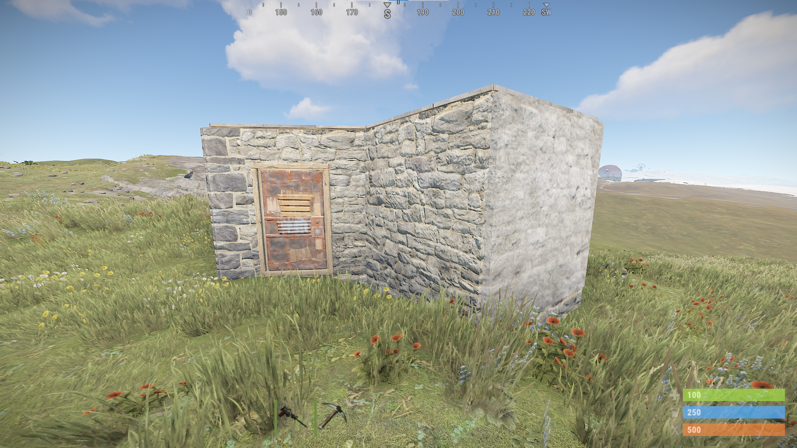
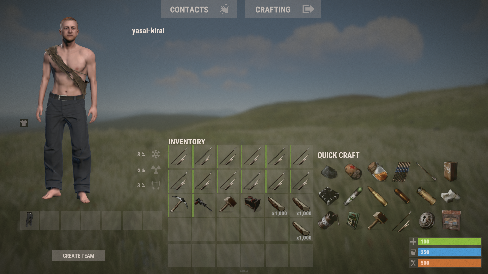
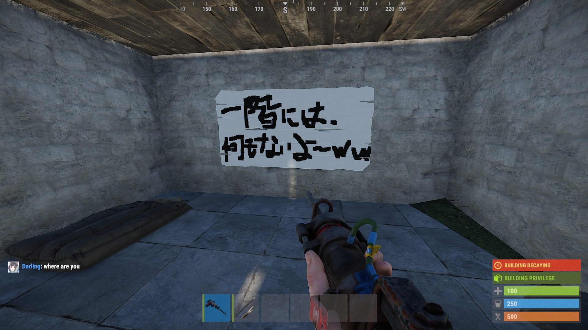
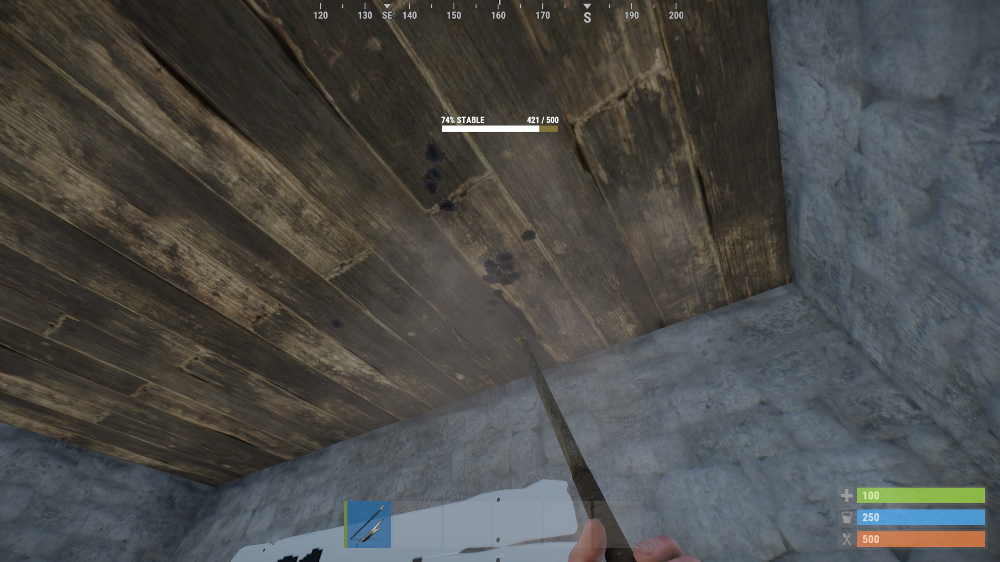

近接レイドとは？
近接レイドとは一般的な名前ではなく記事を書くために筆者が自分で考えたものです。意味はそのままで、近接武器を使ってレイドをすることです。
仮にこのような拠点があったら皆さんはどうしますか？
おそらく、初心者の方なら普通に素通りすると思います。しかしこの拠点、超簡単に抜けます。
まず拠点を抜く前に簡単な豆知識を紹介します。
Rustで拠点を作る際に建てる壁や屋根、床には弱点があります。壁は裏表があり、ごつごつしていないほうが裏です。屋根は下から殴られるのに弱いです。床はそのまま上から殴られるのに弱いです。先ほどの画像を見たらわかる通り、一部壁の模様が変な部分がありますね。これが壁の裏であり弱点部分です。
実際に裏と表、どれくらいダメージの入り方が違うかというと、ピッケルで10回殴ったとき表部分ならダメージは1裏部分ならダメージは12になりました。
このように裏と表でダメージの入り方がまったく違うのです。ですので弱点部分から侵入できそうな拠点を見つけたら近接武器を使い壊しましょう！（後にどのような拠点が抜けるか紹介します）
いざ近接レイドへ！
まずは持ち物を紹介します！近接武器(ダメージの高く修理費用の安い物がよい)、ハンマー、修理用の木材、修理台です。近接武器は本当になんでもいいですが、初期で簡単に作ることができ、修理も木でできるという点から槍をつかいます。ピッケルは耐久面で優れているため近接レイドでは重宝されるのでたくさん持っている場合はつかいましょう。 また、削岩機を使うと10倍ほど楽にレイドできます。
{kind=link}
ではひたすら殴っていきましょう。耐久がなくなり壊れたら、近くに修理台をおいて修理しましょう。何回も修理に行くのは面倒なので槍を10本ほど作っておき、10本壊れたら修理するという形を取るのが一般的です。削岩機も修理台で修理可能です。
どんな場所が簡単に壊せるの？
先ほども言った通り、床ブロックは床、屋根ブロックは内側、壁ブロックは裏側です。
「拠点抜きをしていたらドアウェイ壁が裏向きに！ドアを壊すよりお得に壁を壊そう！」

「レイドして部屋まで入ったものの、一回にはいいものがなかった。二階にあるのかも....」
「よし！屋根を殴って下から侵入しよう！」
タンスより下の床を(豆知識)
タンスまでたどりついたけど、肝心のタンスを壊す分の物資がない....そんな時は床を殴ろう！
近接武器でなかなかダメージの入らないタンスですが、床ブロックが石または木だった場合は下のブロックを壊したほうが少しだけ早いです。銃を持っていたりする場合はタンスを打つほうが早いですが、近接武器しかない場合はしたの床をなぐりましょう。